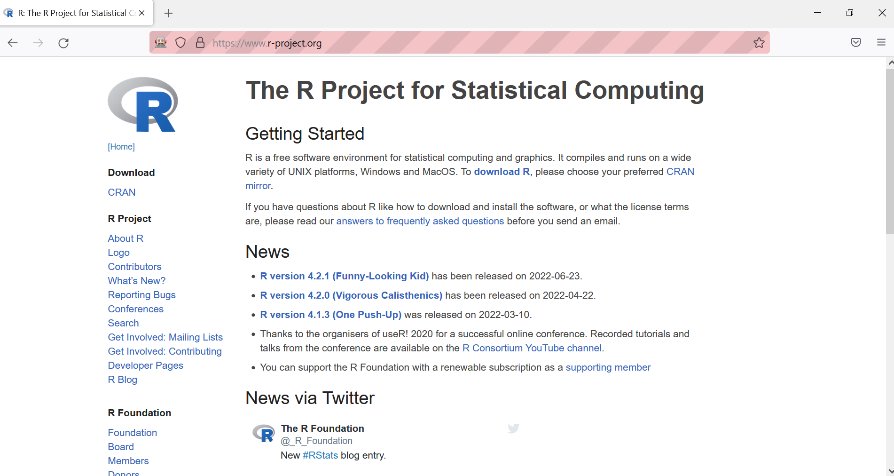

Dynamic pages are the ones that display custom content
different visitors might see different content on the same page at the same URL
depending on their own input (e.g. clicks, scrolls)
Difficult to scrape as page content changes without the URL changing!!
Dynamic pages are scraped typically in three steps
use an additional package, RSelenium
Three steps to dynamically scrape
Create the desired instance of the dynamic page with the RSelenium package
clicking, scrolling, filling in forms, from within R
Get the source code into R
RSelenium downloads XML
rvest turns it into HTML
Extract the exact information needed from the source code with the the rvest package
R Selenium
Use R as browser control to simulate your behavior
scrape dynamically rendered web pages
Originally developed for web testing purposes
automates browsing across platforms
It allows interacting with two things: - with browsers on your computer (e.g. opening a browser and navigating to a page) - with elements on a webpage (e.g. opening and clicking on a drop-down menu)
How RSelenium works
Starting server and browser session
Navigating to page
Finding elements
Sending events to elements
Getting the source code and extracting information
Key examples of what you can do with Selenium
Action
Code
Open a browser
open() / navigate()
Click on something
clickElement()
Enter values
sendKeysToElement()
Go to previous/next page
goBack() / goForward()
Refresh the page
refresh()
Get all the HTML that is currently
displayed
getPageSource()
Installation issues
Java not installed
If you have a message saying that “Java is not found” (or similar), you need to install Java:
If you have a message saying “Could not open firefox browser”, two possible explanations:
if Firefox is not installed, install it the same way as Java on the previous slide
if Firefox is installed but not found, it probably means that it wasn’t installed with admin rights, so you need to manually specify the location of the file:
The clean way to stop Selenium is to run driver$server$stop()
If you close the browser by hand and try to re-run the script, you may receive the following error:
"Error in wdman::selenium(port = port, verbose = verbose, version = version,: Selenium server signals port = 4567 is already in use."
To avoid this error, you also need to run driver$server$stop()
Browsers (starting a server)
Use the rsDriver function to start a server, so that you can control a web browser from within R
Note that the defaults can cause errors, such as trying to start two servers from the same port
Note that rsDriver() creates a client and a server the code singles out the client, with which our code will interact client is best thought as the browser itself it has the class of remoteDriver
Simplest way to navigate is to use URL of page, but we can also refresh, navigate forward and backward
Navigate is called a method, not a function. Hence, it cannot be piped %>% into remDr. Please use the dollar sign $ notation instead
remDr$Navigate("http://somewhere.com")# Other commandsremDr$goBack() #Go back to the previous URLremDr$goForward() #Go forwardremDr$refresh() #Refresh the pageremDr$getCurrentUrl() #Get the URL of the current pageremDr$getTitle() #Get the title of the current page
Browser closing and opening
Close the browser
which won’t close the session on the server
recall that we have singled the client out
remDr$close()
Open a new browser
which doesn’t require the rsDriver function because the server is still running
browser$open()
Finding elements
If you want to use elements (e.g. clicking on the element), you need to find & assign them to an object
all commands to this element will be performed using that environment, not the remoteDriver environment
you should name it well! – webElem is a common name
Note that
the default selector is xpath
requires entering the xpath value
findElement(using ="xpath", value )
Objects can be found by css selector, x-path, id or class, by name, by (partial) link text (anchor elements / links)
Find selectors
If there were a button created by the following code,
remDr$findElement(using ="xpath", value ='//*[(@id = "only-button")]')remDr$findElement(using ="css selector", value =".big-button")remDr$findElement(using ="css", value ="#only-button")remDr$findElement(using ="id", value ="only-button")remDr$findElement(using ="name", value ="clickable")
Save elements as R objects to be interacted later on
WebElem <- remDr$findElement(using = ..., value = ...)
Highlighting elements you find
Highlight the element found in the previous step, with the highlightElement method
# navigate to a pageremDr$navigate("https://r-project.org")# find the elementContributors <- remDr$findElement(using ="link text", value ="Contributors")# highlight it to see if we found the correct elementContributors$highlightElement()

Clicking on the element
Click on the element found in the previous step, with the clickElement method
# navigate to a pageremDr$navigate("http://example.com")# find an elementsearch_icon <- remDr$findElement(using ="css", value =".fa-search")# click on itsearch_icon$clickElement()
Providing input(s) to element(s)
You can provide input to elements, such as text, with the value argument; keyboard presses; or mouse gestures, with the key argument
Note that user provides values while the selenium keys are pre-defined
sendKeysToElement(list(value, key))# scrolling a bitwebElem$sendKeysToElement(list(key ="down_arrow"))# scrolling to end of pagewebElem <- remDr$findElement("css", "body")webElem$sendKeysToElement(list(key ="end"))
Selenium keys
Here is the list of Selenium keys:
The downloaded binary packages are in
/var/folders/3b/f__hzkkn7h187ymsbptz__mw0000gn/T//Rtmp2iHAzy/downloaded_packages
The downloaded binary packages are in
/var/folders/3b/f__hzkkn7h187ymsbptz__mw0000gn/T//Rtmp2iHAzy/downloaded_packages
# navigate to the home pageremDr$navigate("http://example.com/")# find the search icon and click on itsearch_icon <- remDr$findElement(using ="css", value =".fa-search")search_icon$clickElement()# find the search bar on the new page and click on itsearch_bar <- browser$findElement(using ="css", value ="#search-query")search_bar$clickElement()# search for the keyword "R Package" and click entersearch_bar$sendKeysToElement(list(value ="R Package", key ="enter"))
Source code and extracting information
Screenshots
central to working with headless browsers
Getting source code
preferable option: download HTML page source and save it for extraction
directly extracting elements from RSelenium session
findElements() / findElement() for selection of nodes
getElementText() for extracting text from individual nodes
webElems <- remote_driver$findElements(using ="xpath", '/html/body/div/div/div/div/div[2]/button[2]')webElems[[1]]$clickElement()Sys.sleep(5) # wait for page loading
Slow down the code where necessary, with the Sys.sleep
for ethical reasons
because R might be faster than the browser
Let’s get the table from the browser
main <- remote_driver$findElements(using ="css", value =".BNYQd")table <-read_html(main[[1]]$getElementAttribute("outerHTML")[[1]]) # get html
As this is a dynamic table, we need to scroll it down to get more results
Scrolling all the way down
Use sendKeysToElement
webElem <- remote_driver$findElement("css", ".BNYQd")webElem$sendKeysToElement(list(key ="end"))main <- remote_driver$findElements(using ="css", value =".BNYQd")Sys.sleep(1)table <-read_html(main[[1]]$getElementAttribute("outerHTML")[[1]]) # get html
Automating the scrolling task
We get 50 more lines each time we scroll down. Let’s scroll down 50 times:
webElem <- remote_driver$findElement("css", ".BNYQd")for (i in1:50) {cat("Scroll", i, "\n") webElem$sendKeysToElement(list(key ="end"))Sys.sleep(3)}
Parsing the html of the table to get all the lines:
main <- remote_driver$findElements(using ="css", value =".BNYQd")table <- main[[1]]$getElementAttribute("outerHTML")[[1]] # get html# Parse the table doc <-read_html(table)billionaires <- doc %>%html_element("table") %>%# or html_element(xpath = ".//table")html_table(fill =TRUE)
Inspecting data from the table
Inspecting data frame:
dim(billionaires)head(billionaires)
Tidying the data frame
# Get rid of the first empty columnbillionaires <- billionaires[ , -1]# Rename the variables billionaires <- billionaires %>%rename(name = Name,rank = Rank,money =`Net Worth`,age = Age,industry = Industry,country =`Country/Territory` )# Replace empty cells with NA for the entire data framebillionaires <- billionaires %>%mutate_all(~ifelse(. =="", NA, .))# Clean and convert 'money' to numericbillionaires$money <-as.numeric(gsub("\\$|B", "", billionaires$money))
Bonus material (DataViz)
Let’s create a choropleth map to visualise billionaires’ wealth distribution by country
# Aggregate money by countrytotal_money_by_country <-aggregate(money ~ country, data = billionaires, sum)# Convert country names to ISO codes for mappingiso_country <-countrycode(total_money_by_country$country, "country.name", "iso3c")# Create an interactive choropleth mapplot_ly(locations = iso_country,z = total_money_by_country$money,text =paste("Country: ", total_money_by_country$country, "<br>Net Worth: $", total_money_by_country$money, "B"),type ="choropleth",colorscale ="Viridis") %>%layout(title ="Billionaires' Wealth Distribution by Country",geo =list(showframe =FALSE,projection =list(type ='mercator') ) )